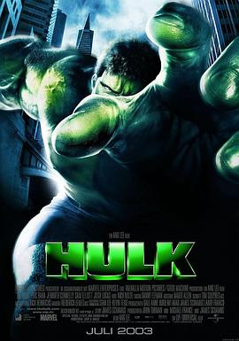

绿巨人浩克 / Hulk
又名：变形侠医(港) / 绿巨人 / The Hulk
作品信息
| 导演 | 李安 |
| 编剧 | 詹姆斯·夏慕斯 / 约翰·特曼 / 迈克尔·弗朗斯 / 杰克·科比 / 斯坦·李 |
| 主演 | 艾瑞克·巴纳 / 詹妮弗·康纳利 / 山姆·埃利奥特 / 乔什·卢卡斯 / 尼克·诺特 / 保罗·克塞 / 卡拉·布欧诺 / 托德·特森 / 凯文·兰金 / 西利亚·维斯顿 / 迈克·埃尔文 / 卢·弗里基诺 / 斯坦·李 / 雷吉·戴维斯 / 克雷格·达蒙 / 杰弗里·斯科特 / 雷吉娜·麦基·雷德翁 / 金大贤 / 达尼爱拉·库恩 |
| 类型 | 剧情 / 动作 / 科幻 |
| 制片国家/地区 | 美国 |
| 语言 | 英语 / 西班牙语 |
| 上映日期 | 2003-10-10(中国大陆) / 2003-06-20(美国) |
| 片长 | 138分钟 |
| IMDb | tt0286716 |
说过什么
2022-07-01 14:03:03
广播 · 看过 · ★★★☆☆
最后一次看到是 2026-10-07T23:14:29+08:00 · 豆瓣原页